DETR-Slot for Flagellum Tracking — v1
Sim-trained object-centric model with distributional latents. Real-frame evaluation on 59 painted annotations. 22 min of training on a 5090.
The problem
Chlamydomonas flagella are ~1-2 raw pixels wide with contrast < 5 gray levels vs a noise floor of ~2-3 gray levels. The human eye picks them up because of spatial coherence over 40-60 pixels of arc length; a per-pixel classifier drowns.
We measured this across 59 real annotated frames from 16 sequences (five different
microscope setups): median width 4 px, median SNR 0.37, median length
51 px. Widths in native space range 4-8 px depending on native camera resolution.
See annotations/flagella_v0/calibration.json.
Why the previous approach stalled
Old: reconstruction-based object-centric video model. Slot attention encoder → STN glimpses → decoder → pixel MSE against the input frame.
Fatal problem: area-weighted pixel loss dominated by cell body (~1000 px) over thin flagellum (~200 px), even with mask weighting. Recon adaptation on real videos made cell segmentation better and flagellum segmentation worse. Multiple experiments (Aug 25-27) never crossed a 55% FG-ARI ceiling on flagella.
The new approach in one line
The slot module keeps its job of carving the clip into objects, but supervision moves from "explain the pixels" to "name the latents," outputs become distributions you sample rather than estimates you trust, and everything downstream of sampling — scoring, selection, identity, time — belongs to the verifier and the solver (not yet built).
Kill
- decoder, STN glimpses, canvas composite
- reconstruction loss (
sim2real/losses/recon.py) and its unsupervised-adapt variants - BackgroundRenderer (we harvest real backgrounds instead)
- temporal identity in outputs (slot indices mean nothing across clips)
Keep
- ConvStem encoder
- Slot attention (Locatello-style, per-slot learned init to break symmetry)
- Hungarian matching (moved to the LOSS, not the E-step)
New
- Input: canonicalized clip (residual, band-passed, width-normalized, σ-scaled) + temporal-energy map channel
- Typed distributional heads per slot: class logits ({∅, pipette, cell, flagellum}) + class-conditional Gaussians on all params
- Flagellum head predicts attachment + K=7 arc-length control points, each with (µ, log σ)
- Loss: DETR Hungarian match + NLL under predicted Gaussians
- Training data: sim FG-only rendered onto real BG patches harvested from energy-map-certified flagella-free regions of your videos
Pipeline
The one-way pipeline. Everything from "canonicalize" onward is shared between sim and real. Only training data differs (see next section).
Training data recipe
For each training scene:
- Sample number of flagella from (0, 1, 2) with probs (10%, 50%, 40%) — the 10% zero-flagellum case is a hard negative that calibrates presence.
- Sample per-flagellum: attachment point, orientation, K=7 arc-length control
points (with per-step angular jitter for curl), width, polarity, amplitude, beat
params. Ranges pulled from
calibration.json— not guessed. - Roll out T=16 frames of the beating flagellum.
- Render each frame as the signed intensity contribution only (no BG). Gaussian tube profile of the chosen width, stamped along the beating curve.
- Composite on a random real-BG patch pulled from the harvested bank.
- The result is (T, 256, 256) canonical-space clip + GT latents (attachment + control points + width + amp + polarity + class).
For each real annotated frame:
- Load raw source clip (T=16 frames centered on the annotated frame).
- Apply same banner-crop as the annotation sampler used.
- Run canonicalization with the sequence's calibrated
src_width_pxso the flagellum resamples to the same canonical width the sim used. - Model output → sample 100 candidate curves per slot → compute Chamfer distance to the painted GT polyline.
- GT is "covered" if any of the 800 samples is within k × 4 canonical pixels in Chamfer distance.
Real BG patches (data_cache/bg_patches_v0.npz, 384 patches, 96 MB):
- For each sequence, sample 4 random 16-frame clips.
- Canonicalize each clip → get temporal-energy map.
- Find 6 patch centers with bottom-20th-percentile energy (certified flagella-free — no motion) and ≥20 px separation.
- Extract (16, 96, 96) sub-clips.
This deletes the BG half of the sim2real gap rather than modeling it. Real noise, real debris, real out-of-focus artifacts.
Model & losses
Architecture: encoder (stack T frames + energy map as channels, ConvStem stride 8) → slot attention (8 slots, 3 iterations, per-slot learned init + small per-batch noise for symmetry breaking) → typed heads.
Model size: 0.48 M parameters. Deliberately tiny — the plan's insight is that the network only needs to propose a candidate distribution; scoring and selection are downstream.
Loss:
total = 10 · class_ce (upweighted so slot specialization dominates early)
+ 1 · pts_nll (attachment + K control points, diagonal Gaussian)
+ 0.5 · width_nll
+ 0.5 · amp_nll
+ 0.5 · polarity_bce
Matching: Hungarian on host with cost = 1·class_neg_log_p + 1·attachment_L2 +
5·curve_Chamfer. Matched slots pay NLL, unmatched slots pay class CE toward ∅.
stop_gradient on the match indices.
Slot symmetry-breaking lesson
v0 failed with 0% recall. Every slot collapsed to identical output — a canvas-center Gaussian with σ=60 px. Diagnosis: shared-µ + gaussian-noise slot init got averaged out under SGD.
v1 fix: Per-slot learned init vector (each slot has its own trainable starting embedding) + small per-batch noise on top. 10× class-loss weight so specialization can dominate before the pts loss stabilizes.
The metric
Sample-coverage-recall: fraction of GT flagellum annotations for which some sampled candidate curve is within k × canonical_width in symmetric Chamfer distance.
Explicitly not NLL and not accuracy-of-means. The network's job is coverage; precise identity + shape selection are the downstream verifier's job. An answer with wide σ that includes truth is more useful than a tight point estimate that misses.
Results
Coverage recall at 20k training steps
104 GT flagellum instances across 59 real frames from 15 sequences. Model trained on sim only.
Per-sequence recall at k=5
Show per-sequence breakdown
| Sequence | k=2 | k=3 | k=5 |
|---|---|---|---|
| uni_rotor / cell1 | 50% | 100% | 100% |
| uni_rotor / cell_2 | 0% | 0% | 100% |
| uni_rotor / cell_3_4 | 25% | 50% | 100% |
| uni_rotor / cell_5 | 0% | 75% | 100% |
| CC124_cell1 / 174615 | 12% | 62% | 100% |
| CC124_cell1 / 180313 | 38% | 62% | 100% |
| CC124_cell2 / 124200 | 0% | 43% | 86% |
| CC124_cell2 / 124646 | 0% | 38% | 100% |
| CC124_cell2 / 124944 | 25% | 50% | 100% |
| CC124_cell2 / 125242 | 25% | 100% | 100% |
| wetransfer / 20240513 | 0% | 38% | 100% |
| wetransfer / 20240805 | 12% | 62% | 100% |
| wetransfer / 20240726 | 0% | 50% | 100% |
| wetransfer / paradeb | 0% | 14% | 100% |
| wetransfer / cell2_20240806 | 0% | 25% | 100% |
| Overall | 12.5% | 51.0% | 99.0% |
Training curve
Loss saturated around step ~5000 at total ≈ 60-75. class-CE ~0.3, pts-NLL ~60, width/amp ~1/2.5, polarity ~0.15.
Visuals
Green = painted GT flagellum. Colored curves = per-slot mean predictions. Faint colored streaks = individual samples from each slot's Gaussian. Text top-left shows the highest per-slot flagellum confidence.
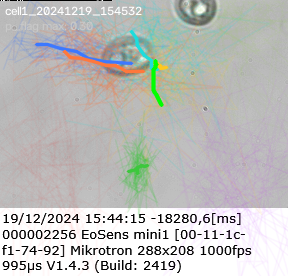
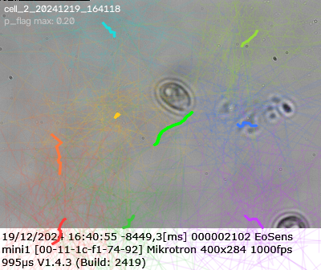
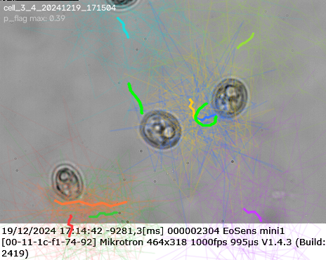
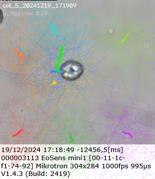
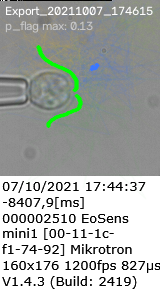
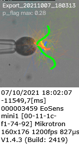
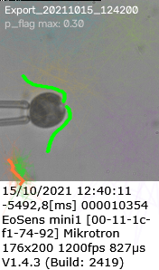
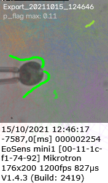
Model has never seen a real frame during training.
Same checkpoint (detr_slot_v1_ckpt.pkl).
Sim data — the training distribution. Confidence higher (0.5-0.6 range) and mean predictions track GT curves closely. Hard-negative rejection works too (sim_01, sim_03).
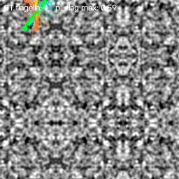
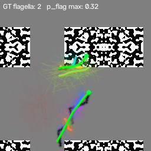
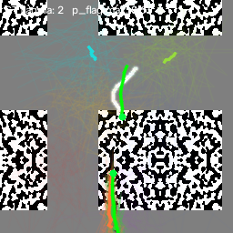
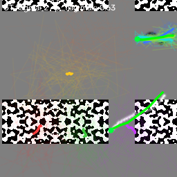
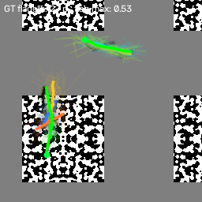
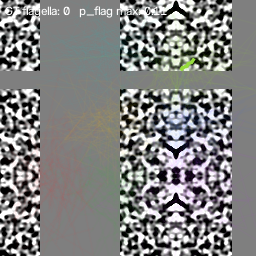
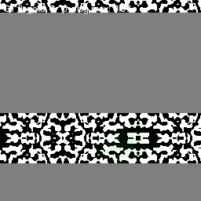
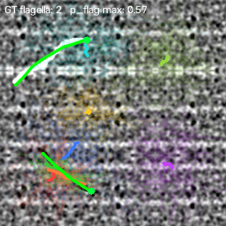
The sim ↔ real gap that remains
| Metric | Sim (in-distribution) | Real (out-of-distribution) |
|---|---|---|
p_flag_max for scenes with flagella | 0.5-0.6 | 0.1-0.4 |
| Mean prediction quality | Tight overlap with GT | Correct region, wrong details |
| Sample coverage @ k=5 | ≈100% | 99.0% |
| Sample coverage @ k=2 | (not measured — sim GT ≡ input) | 12.5% |
Since BG is real (harvested from your own videos), the residual gap lives in the
FG appearance model — tube profile, SNR ranges, motion-blur envelope. Fixable by
tightening the calibration-driven ranges in sim_flagella.py.
Code map
sim2real/data/ canonicalization + FG-only simulator + types
canonicalize.py real | sim → canonical residual clip + energy map
sim_flagella.py FG-only flagellum renderer (composites on real BG)
types.py FlagellumLatent, SceneLatents, class ids
sim2real/model_v2/ DETR-slot model + loss
encoder.py ConvStem (T frames + energy as channels)
slot_attention.py Locatello with per-slot learned init
heads.py ClassHead + FlagellumHead (typed distributional)
detr_slot.py top-level wire-up
loss.py Hungarian match (host) + NLL
sim2real/train_v2/train.py training loop, JAX/Flax, JIT'd step
sim2real/eval_v2/coverage.py sample-coverage-recall on real annotations
sim2real/eval_v2/run_eval.py end-to-end evaluation entrypoint
scripts/annot_sample_frames.py sample frames from all sequences for painting
scripts/annot_flagella.py napari-based paint UI
scripts/calibrate_flagellum.py measure widths/SNR/lengths from painted masks
scripts/harvest_bg_patches.py cache flagella-free BG patches
scripts/viz_detr_slot.py overlay on canonical clip midpoint
scripts/viz_detr_slot_raw.py overlay on raw source frame
scripts/viz_detr_slot_sim.py overlay on sim scene
tests/test_{canonicalize,sim_flagella,model_v2,loss}.py 28 tests, all green
What to fix next
To raise tight-k (k≤2) coverage, in order of expected impact:
- More sim data diversity — bump n_flagella_probs, wider curl std, wider amp range. The model may currently be overfitting the narrow synthetic distribution.
- Add cell + pipette classes to the sim + scene — currently flagellum-only, so the model doesn't learn "flagellum next to cell body" as the target pattern. Attachment prior can then key off cell membrane.
- Larger encoder — 0.48M params is trivially small; the ViT bump in the original recipe was there for a reason.
- Curriculum on SNR — start at 5× the calibrated SNR, decay to measured median (0.37) over training.
- Real replay training — after the verifier stage exists, feed back the verifier-accepted real candidates as pseudo-GT and continue training. This is the self-training phase from the plan; deferred until coverage numbers demand it.
Reproduce the numbers on this page
# from repo root pip install -e . python scripts/harvest_bg_patches.py # 384 real BG patches → data_cache/ python -m sim2real.train_v2.train --steps 20000 # 22 min on RTX 5090 python -m sim2real.eval_v2.run_eval \ --ckpt experiments/detr_slot_v1/detr_slot_v1_ckpt.pkl \ --n-samples 100 --coverage-k 5